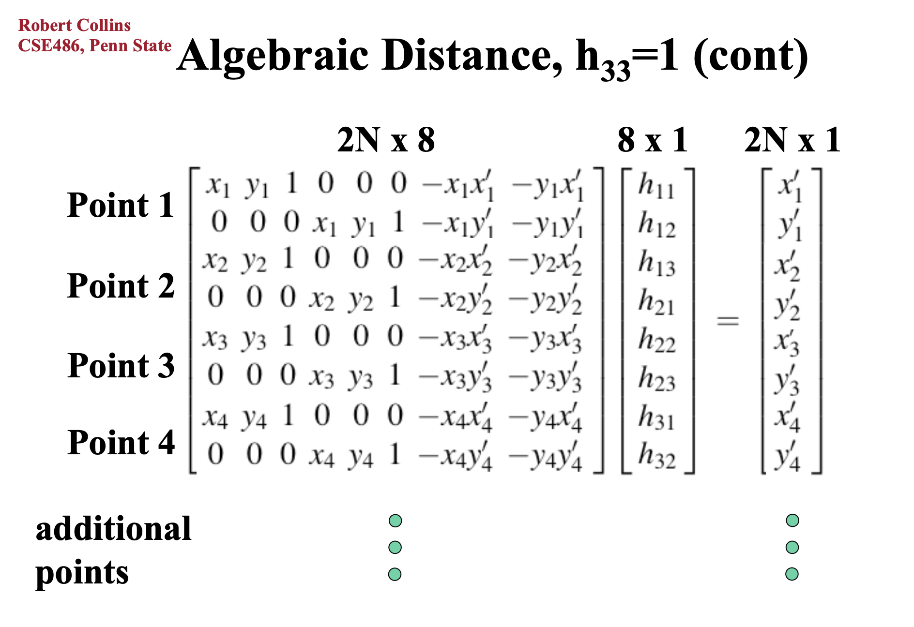

Our goal for the final project is to have Baxter identify cups, one empty the other filled with something, pick up the full cup, and pour its contents into the other cup. The goal is to accomplish this without the use of AR tags or LiDAR - identification will be completely vision-based.
Why we chose this project
This is an interesting problem because we are using vision-based techniques for object detection - that is we are not using LiDAR or AR tags. In this project we tackle problems in computer vision like identifying objects in a 2D image and using that information to extrapolate 3D spatial coordinates. We apply techniques used to solve these problems into making Baxter perform a practical action - pouring. Although it may seem like a simple action, pouring content from a cup into another cup without spilling requires fine control, and due to the constraints that exist from using Baxter’s grippers, it requires multiple grip orientations to effectively pour.
Real-World Applications
Our project can be applied to help people with difficulties in motor function like those with Parkinson’s. Having a robot at home who can pour liquids would improve the quality of life for many. Another application would be pouring dangerous substances, like chemicals, for commercial use.
Design Criteria
Our project is pouring the contents from one cup into another. We need to make sure that Baxter is able to identify the cups, pick up the full one, move it to the empty cup without spilling anything, then pour its contents into the empty cup before setting the newly-emptied cup down. Throughout this whole process, the cup contents should not be spilled and neither cups should be knocked over.
Our Design
Our design was to first calibrate on the height plane of the cup lid using known positions by moving a gripper holding an object around, tracking the spatial position of the gripper and the pixel coordinate of the center of the object. We can obtain the spatial position by using tf and the pixel coordinate using an object detection algorithm that will be explained in the implementation section. Using the spatial-pixel pairs we would calculate a homography matrix to get corresponding pixel to spatial mappings for objects in the plane. Using the same object detection algorithm and our new homography matrix we would then get the position of our cup to pick up and pour into another one (procedure detailed in implementation section).
Design Choices Made
Homography
We had to figure out a way to map the 2D coordinates from a camera feed to the 3D coordinates of Baxter’s arm positions. We were debating between using AR tags on the table or cups to find their locations and our current method, but we chose to have Baxter move around an object as described above. This method is more challenging and more computationally heavy than using AR tags, but we find it to be more robust for our needs. With AR tags, we would have to make sure that they are always in view, which would not only restrict our movements but also not allow us to move on with our project since we would not longer be able to accurately detect the cup or table. With our current method, we spend a lot of time calibrating since we need to run the image detection algorithm on each image, but once that’s done, we don’t have to worry about blocking any AR tags or recalibrating throughout the whole process.
Picking up cups
We decided to pick up the cup from the top with the arm pointing down and move it closer to the edge of the table before picking it up from the side with the arm horizontal which is the ideal position to pour. We do this because the arm is pretty wide and might hit the table if it goes to pick up a cup that’s farther away on the table horizontally. This way takes longer since it is a roundabout way to move one cup to the other, but it is safer.
Pouring
Pouring: We chose to pour with the arm horizontal along the x-axis (pointing straight away from the body) since this way we can simply rotate the end-effector joint to pour.
How Our Design Choices Affected Meeting Our Design Criteria
The choice of procedure for homography calibration meant running computationally intensive and unreliable processing for many images. This is not an efficient process, also if the position of the camera changes, the homography has to be recalibrated.
The choice to restrict the cup position to be in only one plane - the height plane - means the object detection is not very robust.
Fixing the pouring procedure to only pouring along the x-axis means that if the environment changes, it means that we need to brute force find the exact parameters in order to have the cup pour again.
Hardware
We used a Baxter, specifically its right arm for gripping and its left arm for its camera. < insert pics >

Left arm

Right Arm
Software
Image Detection Algorithm
We wrote a detection algorithm for cups using Mask R-CNN and Canny edge detector and is as follows:
- We first find the mask of the cup using a pre-trained model of Mask R-CNN.
- We traverse the edge of the top of the mask to get the top half of the cup lip
- We then use Canny edge detector to find the bottom half ot the lip
- We combine the edges found from the mask and the edge detector and fit an ellipse using linear least squares regression, then store the center of the ellipse.
- We computed the homography matrix using pixel-spatial coordinates pairs. We formulate the following linear system to solve and use least squares to find the optimal homography matrix:

Linear system to solve for homography matrix
Making Baxter Pour
To make Baxter pour, we modified the path_planner.py from lab 7 to get Baxter to pour to in addition to plan for an end position and orientation, plan for joint angles. We did this so that when pouring, we could have Baxter only turn his wrist, because with end and orientation planning, sometimes small orientation changes to the end-effector, moving the whole arm could have Baxter make large sweeping motions.

Santorini, miniaturized

Santorini, miniaturized & saturation-boosted
More Results
THe following images are more results of creating fake miniatures. The left images are the source images, and the right are the fake miniatures, where they are the blurred using dilated masks and then saturation-adjusted to increase the illusion of miniatures.

Berkeley, original

Berkeley, miniaturized & saturation-boosted

Safeco Field, original

Berkeley Field, miniaturized & saturation-boosted

Sproul Hall, original

Sproul Hall, miniaturized & saturation-boosted
Summary
This has been a fun project. I think this is very relevant with shallow DOF being the current trend and computional photography being integrated into every smartphone camera. It is amazing how DOF and percieved quality of a photo can be changed by a Python/Matlab script, altough the quality can never be as good as DOF from a lens due to imperfections of drawing masks. I think with edge detection and/or image segmentation algorithms, we can improve drawing masks for subjects we want to focus on.
In this project, we implement seam carving, a content-aware image resizing technique. A seam is a connected path from one side of the image to the other that chooses exactly one pixel from each column (or row). We remove seams until we end up with an image of our desired size. The resulting image should be a cropped image where we remove "unimportant" details.
Algorithm
First, we compute an energy map, which ranks pixels by "importance". For this project we use x and y gradient to compute an energy map.

Gradient energy function
Next we find a path of minimal total energy. We compute the minimal total energy using dynamic programming - we first traverse the image from the second-to-last row to the first row computing the minimal total energy up to each pixel while also keeping track of its neighbor of minimal total energy below:

Cumulative energy equation
Then we backtrack starting from the pixel with the smallest total energy in the first row all the way to the last row to obtain our seam to remove.
Results
Te following images are more results of seam carving. The left images are the source images, and the right are the resized images.
Vertical Seam Removal

Sky Tree, original

Sky Tree, with vertical seams removed

Hawaii, original

Hawaii, with vertical seams removed

Supertrees, original

Supertrees, with vertical seams removed
Horizontal Seam Removal
We can rotate the image to remove horizontal seams

Piling, original

Piling, with vertical seams removed

Hiroshima, original

Hiroshima, with horizontal seams removed
Failures
The choice of energy map and image to resize influence the quality of seam carving. Here, we used the gradient energy map on this image of a bullet train. Since the surface of the bullet train is smooth and curvy, some seams carve into it.

Shinkansen, original

Shinkansen, with vertical seams removed
Here it's easy to see where the seams were removed by the obscured braces.

Golden Gate Bridge, original

Golden Gate Bridge, with vertical seams removed
Bells & Whistles
Seam Insertion
I implemented seam insertion (described in paper by Shai Avidan and Ariel Shamir). The algorithm runs as follow: first find k seams found by seam carving. After collecting all the seams, we then add new seams next to the seams found in reverse order to the original origin, where the new artificial seams is computed by taking the average of seams to the left and right of the old one.
Sky Tree, original

Sky Tree, with vertical seams inserted

Supertrees, original

Supertrees, with vertical seams inserted
Object Removal
I also implemented object removal using seam carving and seam insertion. I first make a mask for the object I want to delete. I set the values in the mask such that the masking region for the object is negative and the rest of the mask to be zero. Then for seam carving I multiply the mask with the energy map, keeping the rest of the algorithm the same. Then I inserted vertical seams to resize the image back to the original size.
Hawaii, original

Hawaii, with tree removed
Sky Tree, original

Sky Tree, with Sky Tree removed and vertical seams inserted
Summary
Seam carving is a simple, yet functional approach to image resizing. Using the right energy function, it can work beautifully. The use of dynamic programming is elegant, although it can be computationally expensive if you want to remove many seams on large images.